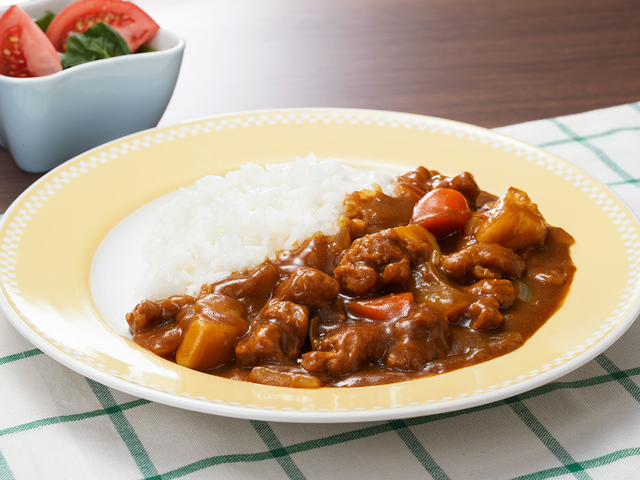

特製カレー

材料
牛肉（300g）
玉ねぎ（1個）
ジャガイモ（2個）
にんじん（1本）
カレールー（1箱）
水（適量）
サラダ油（大さじ2）
手順
1. 牛肉を食べやすい大きさに切り、玉ねぎ、ジャガイモ、にんじんもそれぞれ切っておく。
2. 中火でサラダ油を熱し、牛肉を炒め、色が変わるまで炒め続ける。
3. 刻んだ野菜を加えてさらに炒め、野菜がしんなりするまで炒め続ける。
4. 鍋に水を加え、カレールーを溶かしながら加え、とろみがつくまで煮る。
5. ご飯の上にカレーをかけて完成！